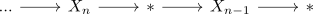

cofiltered limit of nullhomotopic maps is contractible in Anima
Proposition
Let $I \rightarrow \mathrm{An}$ be a cofiltered diagram, such that each morphism is nullhomotopic. Then the limit is also contractible.
Proof
$I = \mathbb{Z}$
The category $\mathbb{Z}$ is equivalent to $2\mathbb{Z}$ so we may extend the diagram to

and then initially approximate
general case
write any cofiltered diagram $I$ as colimit/union $I_j$ of $\mathbb{Z}$ or $\mathbb{N}$
- then use that $\mathrm{Fun}(I, \mathrm{An}) \simeq \mathrm{lim} \mathrm{Fun}(I_j, \mathrm{An})$ and then use some argument along the lines of limits of adjoints
sktech:
- w.l.o.g. we may assume that $I$ is a (1,1)-Category (cf. cofinal approximation of a kappa filtered category by a directed set).
- define some category $I'$ which contains on objects $I \times \{0,1\}$ and morphisms are given by: \begin{align*}
\mathrm{Hom}_{I'}((i,n), (i',n')) =& \begin{cases} * & \mbox{if } i < i' \textrm{ or } i = i', n < n' \\ \emptyset & \mbox{else } \\ \end{cases} \end{align*}
Then we can regard $I$ as full subcategory given by $I \times \{0\}$ and extend